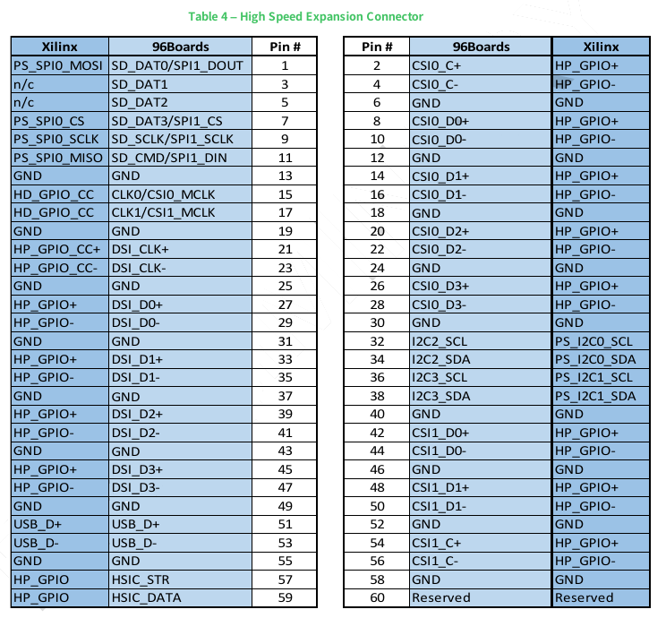
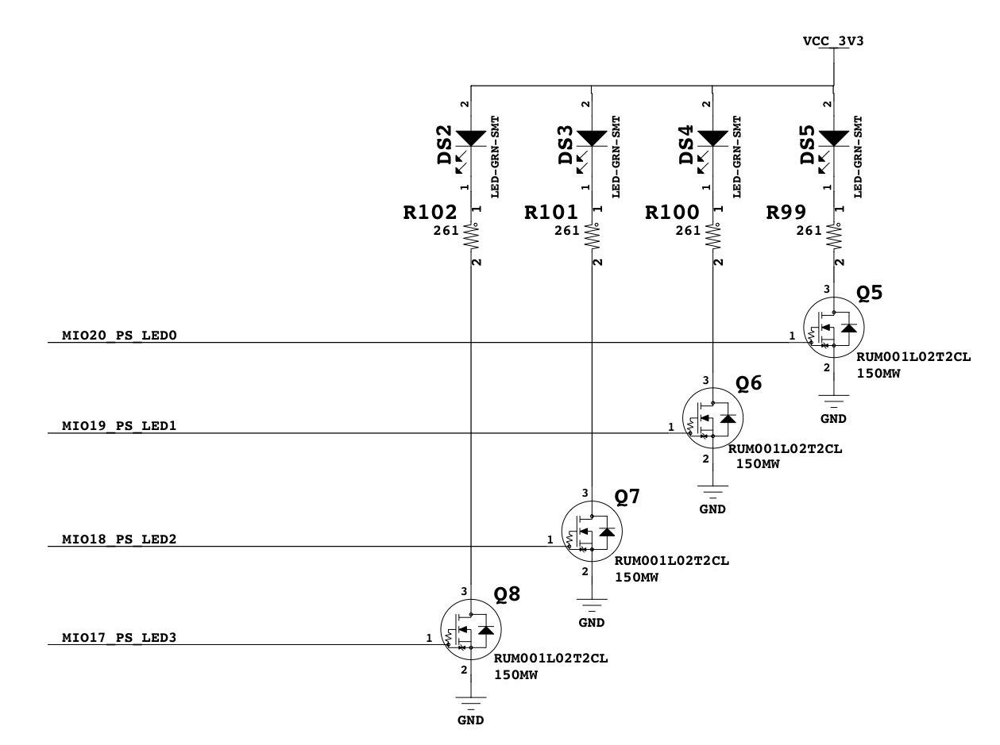

Ultra96 開發紀錄: 開箱文 一文中筆者紀錄了如何購買 Ultra96 開發板，在這邊文章中我們則是來看看 Ultra96 rev1 的版本，到底有哪些硬體與週邊。
Ultra96 有分 v1 與 v2 兩個版本， 本文使用的是 Ultra96v1 的硬體 ，不過請注意 Ultra96v1 已經被宣告 EOL 了
但是就算被宣告 EOL (End-of-Life) 了，因為我也只有這塊板子，所以會以 Ultra96v1 為主來寫文章
開發板概觀
首先先來看看這片開發板的外觀與有哪些週邊
和其他的 FPGA 開發板相比，這片板子由於只有無線網路功能，因此如果要連網的話就需要走 Wi-Fi ，使用起來會相對麻煩。
除此之外，由於沒有內建 JTAG 的功能，因此如果你目標是將這塊板子用於 FPGA 開發的話，你可能最好多買 專用的 JTAG 轉接板。
方塊圖
大概知道外觀與 I/O 後，就來看看系統的方塊圖吧

UltraZed-EG
在 Ultra96 上核心的晶片為 Xilinx UltraScale+ MPSoC 系列的 Zynq UltraScale+ EG (XCZU3EG) ，這一系列不同版本的晶片差異如下:
可以看到 Zynq UltraScale+ EG (XCZU3EG) 雖然缺少了 H.264/H.265 的硬體解碼器，但是也是具有 Mali-400 MP2 GPU 的設備，也就是說我們手上這片要跑 Android 也是可行的。
此外，因為 Zynq UltraScale+ EG 除了是 FPGA 外，同時內建了 Cortex-A53 以及 Cortex-R5 兩種用於不同工作的處理器，我們可以透過 OpenAMP 框架來達到讓 Cortex-A53 上的 Linux 和 Cortex-R5 上的 RTOS 進行通訊以及交換資料的效果，這樣除了 FPGA 可以用於處理即時性的工作外， Cortex-R5 也可以幫忙處理類似的工作。
記憶體 (LPDDR4)
Ultra96 具有 4GB 大小的記憶體，根據 Ultra96 Hardware User Guide 上的資料來看，目前在 Ultra96 rev1 上用過以下兩種記憶體元件:
低速擴充腳位
低速擴充腳位 (Low Speed Expansion Connector) 大部分依照 96board 規範 ，將對應的 I/O 拉了出來，有些 I/O 則是你可以透過 FPGA 來進行控制。
值得注意的是，這邊的插孔的寬度是 2.0mm ，和我們常用的 2.54mm 杜邦線 寬度不同，因此也可能你會需要買 2.0mm 轉 2.54mm 的擴充板 來進行接線，或是購買 Mezzanine 來進行擴充 (要先確認相容性呦~)
在表上的 HD_GPIO (High-density I/O) 位於可程式邏輯區 (Programmable Logic, PL) 上，我們可以透過 FPGA 對其進行操控，電壓可設定範圍為 1.2V ~ 3.3V (預設為 1.8V)
而其他和處理器系統 (Processing System, PS) 相關的 I/O，預設則是被設定在 1.8V 上
低速擴充腳位位置
低速擴充腳位對應表
高速擴充腳位
高速擴充腳位 (High Speed Expansion Connector) 則是使用 FCI 61082-061409LF 這個 60pin x 0.8mm 的插槽，
要注意的事情是，高速擴充腳位這邊除了 I²C2 、 I²C3 和 SD 這幾個界面外，其他都是用位於可程式邏輯區 (Programmable Logic, PL) 上的 HP_GPIO (High Performance GPIO) 替代，也就是說，需要自行透過 FPGA 去定義這些接腳的功能。
HP_GPIO 電壓可設定範圍則是 1.0V ~ 1.8V
高速擴充腳位位置
高速擴充腳位對應表

MicroSD 卡座
MicroSD 的部份採用 SCHA4B0419 這個卡座，並搭配 MAX13035E 來將輸入的 3.3V SD 卡訊號轉換成 1.8V 位準的訊號，這邊之所以要進行電壓的轉換主要是因為 Ultra96v1 的 MIO 皆是被設定在 1.8V 的狀態
位置
MicroSD 電路圖
MIO 對應表
WiFi/Bluetooth
WiFi/Bluetooth 的部份採用德州儀器 (TI) 的 WL1831MODGBMOCR 模組來使用，SoC 上的 UART0 連接到 Bluetooth 進行控制，而 WiFI 則是透過 SDIO 的界面和系統溝通
位置
WiFi/Bluetooth 電路圖
MIO 對應表
除了上面的 MIO 對應外，要控制好 Bluetooth 還需要一些位於可程式邏輯端 (Programmable Logic, PL) 的設定才行，根據 Constraints 的資訊，有以下這些設定和 Bluetooth 有關，因此在設定這塊板子的時候要注意一下
# ---------------------------------------------------------------------------- # Bluetooth # ---------------------------------------------------------------------------- # Bank 26 set_property PACKAGE_PIN C8 [get_ports {BT_AUD_CLK }]; # "C8.BT_AUD_CLK" set_property PACKAGE_PIN A8 [get_ports {BT_AUD_FSYNC }]; # "A8.BT_AUD_FSYNC" set_property PACKAGE_PIN A9 [get_ports {BT_AUD_IN }]; # "A9.BT_AUD_IN" set_property PACKAGE_PIN B9 [get_ports {BT_AUD_OUT }]; # "B9.BT_AUD_OUT" set_property PACKAGE_PIN B5 [get_ports {BT_HCI_CTS }]; # "B5.BT_HCI_CTS" set_property PACKAGE_PIN B7 [get_ports {BT_HCI_RTS }]; # "B7.BT_HCI_RTS"
Mini DisplayPort
這塊板子可以透過 Mini DisplayPort 來進行畫面的輸出，我是使用 Apple 的 Mini DisplayPort to VGA Adapter 來將畫面轉換成 VGA 進行顯示
位置
電路圖
MIO 對應表
UART

I²C
JTAG
Ultra96 有一個特別的地方，就是沒有內建 JTAG 在開發板內，因此如果你想使用 JTAG 功能的話，最好買 專用的 JTAG 轉接板。
接上 JTAG 後樣子
電路圖
當然，一旦接上了這個專用的 JTAG 轉接板 後，原本好攜帶的特性就蕩然無存，因此如果你的需求是跑 PYNQ 的話，這個 JTAG 應該也不是必要的。
User LEDs
板子上面共有 4 個 使用者可以透過處理器系統 (Processing System, PS) 去進行控制的 User LEDs ，和別的 FPGA 開發板不同， 這四個 LED 都不能透過寫 Verilog 程式來進行控制 。
位置
User LED 電路圖

MIO 對應表
USB
Ultra96 的 USB 部份就比較複雜了，其中有一組 USB 3.0 是直接接到高速擴充腳位 (High Speed Expansion Connector) 的，其他的則是透過 USB5744 這個 USB 3.0 Hub 來進行擴充
USB 位置
USB 方塊圖
MIO 對應表
BOOT MODE
Ultra96 支援 三種 開機模式，分別是 JTAG 、 SD Card 和 USB ，我們可以透過更改 SW2 的設定，來決定新的開機模式是怎樣。
JTAG
要使用 JTAG 模式的話，首先你需要購買 JTAG 轉接板 ，接下來，設定 SW2 為以下模式
SW2 位置
BOOT MODE : JTAG
這樣子，我們就可以透過 JTAG 將 Vivado 上寫好的新的 Bitstream 下載到板子上。
SD Card
如果我們要走 SD 卡開機的話，則是這樣去設定 SW2 的
SW2 位置
BOOT MODE : SD
重開機前記得要把 SD 卡插入到 SD 卡插槽呦~
USB
設定成 USB Mode 的話，會將 Ultra96 變成一個 USB Device ，接到電腦後透過電腦端的工具來對其進行操作
SW2 位置
BOOT MODE : USB
這個功能我還沒用過，所以也不知道實際狀況。但是根據 Zynq UltraScale+ Device Technical Reference Manual.pdf 上面的資訊，是這樣講的
Ultra96v1 Ends of life
上面看了這麼多，事實上你去買的時候應該都是買到 Ultra96v2 的板子，因為 Ultra96v1 Ends of life 啦 Orz…

其實我也覺得很悲劇，不過畢竟板子都買了，如果沒人贊助我的話我會維持用 Ultra96v1 來寫文章，畢竟寫這個只是殺時間賺不到錢錢的 :P
後記
這篇文章從今年 1 月一直拖稿到 7 月，主要是因為今年剛好很忙，又這份電路圖沒啥顏色，實在沒有動力寫阿阿阿阿阿阿阿阿阿阿阿
結果我寫完 Ultra96 rev2 也出來了，真的是殘念 www
延伸閱讀
- Ultra96 開發紀錄: 開箱文
- UltraZed-EG PCIe Carrier Card 開發紀錄: 硬體認識
- Avnet Introduces Ultra96-V2 Development Board
- Introducing Ultra96-V2
- Ultra96 Product description.pdf
- AES-ULTRA96-G schematic 180309.pdf
- Ultra96 Hardware User Guide v0.9 (preliminary).pdf
- Ultra96 Getting Started Guide
- PYNQ: Python Productivity on Zynq
- Welcome to Ultra96-PYNQ's documentation!
- Ultra96 用 Yocto Linuxのビルドの続き6（WLANの設定）
- MicroZed Chronicles: Ultra96 and Pynq
- SUNON MC30060V1-000U-A99
- Ultra96 Fan Control
- Accelerating Your Ultra96 Developments!
- XDF 2018 Linux Application Development on Ultra96
- https://github.com/jimheaton/Ultra96_ML_Embedded_Workshop
- Linux-App-Development-on-Ultra96
- Ultra96 Training Kit User Guide
- Ultra96 v1 downloads
- http://zedboard.org/product/ultra96
- http://zedboard.org/support/design/24166/156
- Avnet Ultra96 Dev Board - Review